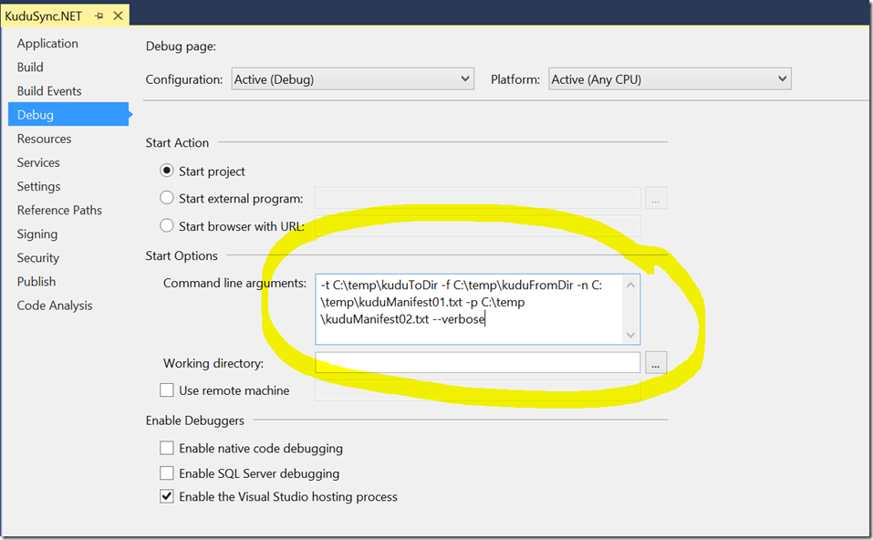

What is the purpose of KuduSync's nextManifest and previousManifest options?
Short Answer
--nextManifest filePath- KuduSync creates this file at the path we specify.
- Then, KuduSync writes a list of all the files and subdirectories that are part of the current deployment.
- That way, we can use this file as the
--previousManifestoption the next time we deploy.
--previousManifest filePath- KuduSync reads this file - it must already exist and should list all files and subdirectories that were part of the previous deployment.
- Often, this is the
--nextManifestfile that KuduSync wrote to during the most recent deployment. - This file is important, because KuduSync will only delete a file from the destination sync directory if that file was part of the most recent deployment.
From the README.md, KuduSync is a...
Tool for syncing files for deployment, will only copy changed files and delete files that [don't exist] in the destination but only if they were part of the previous deployment.
This advantage is that, when integrated with Git Deployment, KuduSync will only delete files that are in version control. It will NOT delete
- uploaded user content (e.g. pictures)
- content that we uploaded via FTP (e.g. configuration files that aren't in our source code)
This is a terrific feature. If a file or directory isn't under version control, KuduSync will never delete it. Hooray!
{kind=link}
This is a Kudu. It's a type of African antelope. Those ears are as large as the head. I guess that means Microsoft is listening.
Read the Source
KuduSync has sparse documentation. So to learn the above, I stepped through the source code as follows.
- Clone the KuduSync.NET source.
- Open KuduSync.NET.sln in Visual Studio.
- Build the solution.
- Open the Project Properties > Debug > Command Line Parameters.
- Add the demo command line parameters (or whatever you'd like.)
- Debug now with a few breakpoints in areas of interest.
Demo Command Line Parameters
-t C:\temp\kuduToDir -f C:\temp\kuduFromDir -n C:\temp\kuduManifest01.txt -p C:\temp\kuduManifest02.txt --verbose

{kind=link}
--previousManifest
The --previousManifest option provides that path to a file that lists all the files that were part of the previous deployment. That tells KuduSync whether it can delete them or not.
Here are some notes on the source code.
- The
_previousManifestfield is relevant within thebool DoesPathExistsInManifest(string path)method. - That method occurs three times. In each occurrence, it's there so that KuduSync only delete a file or directory if
DoesPathExistsInManifestreturnstrue. - The test within the method is twofold:
_options.IgnoreManifestFile ||_previousManifest.Contains(path)
- In other words, we can delete a file or directory either
- if we're ignoring the manifest file OR
- if the previous manifest file lists the file.
- This jives with the KuduSync documentation, which says:
[KuduSync ]will only ... delete files that [don't exist] in the destination but only if they were part of the previous deployment. (emphasis added)
So that's what the --previousManifest option does. It lists the files that were part of the previous deployment, so that KuduSync knows whether they are okay to delete.
--nextManifest
- The
_nextManifestfield is relevant three times in the code. - Twice it occurs within the
SmartCopymethod, in which cases it- adds the path of a source file
- adds the path of a source subdirectory
- After
SmartCopycompletes,_nextManifestsaves itself to the file system.
--nextManifest provides a file to which we can save a list of the files and subdirectories in the deployment. Then, we can pass that file path as the --previousManifest option the next time we run KuduSync.